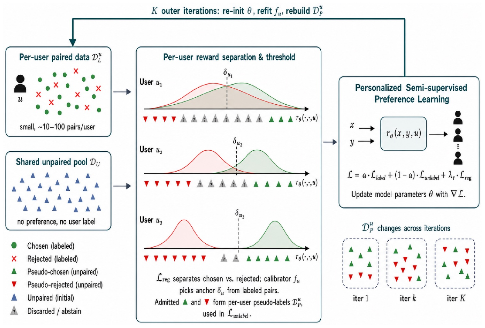
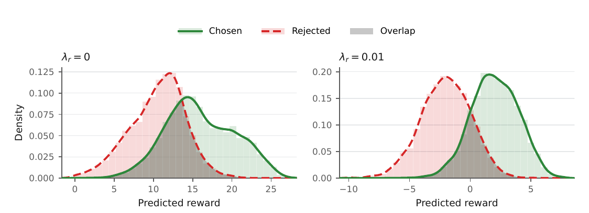

个性化奖励模型要为不同用户给同一条回复打不同的分，训练数据是用户标注的偏好对：同一个提示下两条回复，用户选了哪条。这种标注很贵，每个用户只有几十对，新用户可能只有十几对；与此同时，模型能生成的回复要多少有多少，只是没有用户、也没有偏好标签。Duke 和 GWU 的这篇 PerSPL 把这批无标注回复变成每个用户各自的训练数据：先在训练中把每对标注回复的分数均值压向 0，让不同提示下的分数可以放在一起比；再为每个用户拟合一条“分数→被选中概率”的单调曲线，只给置信度高的无标注回复打伪标签，和标注数据一起反复重训。在 PersonalLLM、HelpSteer2、Reddit TLDR、Chatbot Arena 四个基准上，PerSPL 对见过的用户和新用户都拿到最高平均准确率，PersonalLLM 上新用户准确率 95.5%，最强基线 LoRe 是 94.0%。
1. 为什么无标注回复不能直接用
奖励模型常用 Bradley–Terry（BT）损失训练：用户 在提示 下更喜欢 而不是 ，模型给两者打分 和 ，
损失只看分差。给同一个提示下的两个分数同时加 100，损失不变，同提示内的排序也不变。
这在比较同一提示下的两条回复时没问题，但对单条无标注回复就成了麻烦。要给一条回复打“这个用户会喜欢”或“不会喜欢”的伪标签，得拿它的分数和一个跨提示统一的阈值比。论文举了个例子：提示 a 下两条回复得分 (101, 100)，提示 b 下是 (1, 0)。同提示内都排对了，但提示 b 里被选中的那条（1 分）比提示 a 里被拒的那条（100 分）还低，用任何一个阈值都分不开。作者把这个问题叫分数坐标不确定：成对损失定了分差，没定每对分数整体落在哪。
现有的半监督奖励模型（SSRM、SSPO 等）都只学一个全体用户共用的奖励，用一个全局阈值打伪标签，处理不了“同一条回复对不同用户标签不同”的情况。

2. 方法
2.1 分数对中心
解决办法很直接：既然每对分数的均值没人约束，就加一项把它压向 0，
期望对所有用户的所有标注对取。上面的例子里，两对分数都会被拉到 (0.5, −0.5) 附近，同提示内的排序不变，跨提示的比较也对了。主实验里这一项的权重 。
2.2 每个用户一条校准曲线
有了可比的分数，下一步是确定每个用户的阈值。对用户 的每个标注对，把选中回复的分数标 1、被拒回复的分数标 0，用保序回归拟合一个单调不减的函数 ，输出“这个分数出现在选中一侧的概率”。 第一次达到 0.5 的位置记为该用户的阈值 。
对一条无标注回复，算出它在用户 下的分数 ：若 标为喜欢，若 标为不喜欢，介于两者之间就弃权，不进训练。主实验 。伪标签的损失以 为分界，
是伪标签。同一条回复对不同用户会落在曲线的不同位置，所以拿到的标签可以不同。
2.3 迭代自训练
第一轮只用标注数据加对中心项训练，得到初始模型和每个用户的校准曲线。之后每一轮：用当前模型给无标注池重新打伪标签，模型重新初始化，用 训练，主实验 。校准曲线只用标注数据拟合。
模型结构和基线 LoRe 一样：在冻结的 4,096 维语言模型末 token 表示上，学一组低秩线性基，每个用户一组落在单纯形上的混合权重。所以 PerSPL 和 LoRe 的差别只在训练数据和损失上。
3. 实验
四个基准分别覆盖“回复真不真实”和“用户真不真实”两个维度：PersonalLLM 是合成回复加模拟用户，HelpSteer2 是人工评分回复加按属性权重模拟的用户，Reddit TLDR 和 Chatbot Arena 是真实用户的真实偏好。见过的用户参与联合训练；新用户只用一个小的支持集适配。指标是同提示内成对准确率，五个随机种子取均值。
主结果。这组要证明加了无标注数据后，在相同模型结构下准确率更高。七个基线包括：不区分用户的 BT、把用户信息作为输入的 GPO 和 VPL、给每个用户加小模块的 PAL 和 LoRe、元学习方法 MRM，以及现成的 Skywork V2 奖励模型。
| 方法 | PersonalLLM 见过/新 | HelpSteer2 见过/新 | Reddit TLDR（100 对）见过/新 | Chatbot Arena 见过/新 |
|---|---|---|---|---|
| BT | 88.8 / 89.0 | 63.0 / 63.2 | 63.2 / 64.3 | 80.3 / 78.1 |
| LoRe | 94.6 / 94.0 | 69.6 / 70.1 | 65.3 / 68.4 | 81.3 / 78.4 |
| MRM | 91.6 / 92.0 | 70.7 / 70.9 | 70.0 / 69.8 | 80.7 / 77.2 |
| PerSPL | 95.7 / 95.5 | 71.6 / 71.2 | 70.7 / 70.1 | 83.0 / 81.0 |
PersonalLLM 和 HelpSteer2 取多样性参数 0.1；Chatbot Arena 每个见过的用户 25 对、新用户 12 对标注。PerSPL 在每一列都是最高均值。和同结构的 LoRe 比，Reddit TLDR 见过用户从 65.3 升到 70.7。和每组设置里整体最强的基线做配对 bootstrap，见过用户和整体的差值区间全部不含 0，新用户五组里有四组不含 0。
2×2 消融：对中心项和无标注数据谁在起作用。这组在 HelpSteer2 两个设置和 Reddit TLDR 两个设置上，分别开关对中心项（ 设为 0）和无标注训练（只跑一轮，$K=1$）。
| 配置 | HelpSteer2 (0.1) 见过 | Reddit TLDR (150 对) 见过 |
|---|---|---|
| 完整 PerSPL | 71.6 | 70.9 |
| 有无标注数据、无对中心 | 66.5 | 62.5 |
| 有对中心、无无标注数据 | 70.9 | 69.1 |
| 两者都没有 | 70.9 | 69.0 |
只加对中心项，见过用户准确率变化在 ±0.1 之内。没有对中心时加无标注数据，四组设置里掉 2.9 到 6.5 个点；有对中心时再加，涨 0.5 到 1.8 个点。所以对中心项本身几乎不提分，它的作用是让无标注数据从有害变成有用。

标签噪声和标注预算。在 HelpSteer2 上和最强基线 MRM 对比。随机翻转偏好标签的比例从 0 加到 0.5，两者都下降，PerSPL 一直领先，翻转比例 0.4 时领先 5.07 个点，0.5 时 6.69 个点。每个见过用户的标注从 50 对加到 200 对，PerSPL 一直高 0.81–1.08 个点。新用户支持集从 10 对加到 50 对，领先幅度从 0.81 扩大到 1.33 个点。
无标注回复来自别的模型时。这组要回答：无标注池的回复和标注数据不是同一批生成器产出的，还有没有用。PersonalLLM 上固定 20% 的标签翻转（避免准确率饱和），让无标注池里来自两个未见过的生成器的比例从 0 到 1 变化。相对只用标注数据的模型，提升从 3.21 个点降到 0.66 个点，十个种子的配对区间都在 0 以上。
4. 局限
作者指出，每个用户的校准曲线需要一些标注作锚点，所以方法只适用于少样本个性化，处理不了零样本的新用户。分布偏移实验只覆盖了论文选的几个生成器。
补充两点：所有方法都建立在冻结的语言模型表示上，只训练奖励头，没有测试端到端微调奖励模型时的表现；实验评的是奖励模型的成对准确率，没有接到下游的策略训练或回复选择上看效果。
5. 实践意义
如果你在做个性化排序或个性化奖励模型，手上有大量没标签的候选，PerSPL 的两步可以直接借：先给成对损失加一项把每对分数均值压向 0，检查不同请求之间的分数是否可比；再按用户拟合保序回归做校准，只给高置信样本打伪标签。消融说明第一步是前提，没有它直接自训练会掉点。